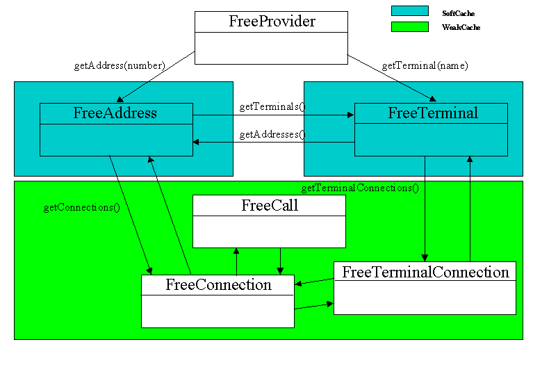

Weak TelephonyProvider Synchronization
Richard Deadman
June 2000
This document outlines a state synchronization problem between
the Generic JTAPI Framework and some TelephonyProvider implementations,
and proposes a solution architecture. Support for weak synchronization,
as well as any support framework architecture, is currently subject to
debate and discussion and may, in the future, be dropped or altered.
Feedback is always valuable.
Background
The Generic JTAPI Framework takes on the responsibility for:
-
Mapping JTAPI calls to a smaller TelephonyProvider interface
-
Tracking listener and observer registrations
-
Receiving state and event information from a TelephonyProvider implementation
-
Mapping of complex telephony commands into a smaller-set of primitive commands.
-
Providing threaded handling of events
-
Provide a simple capabilities framework
-
Provide a media service framework that delgates media calls off to a simpler
media interface
The concept is to concentrate implementation-independent funcionality into
a re-usable core and reduce the responsibilities of a particular telephony
provider to:
-
implementation of a small set of simple telephony/media commands
-
reporting of state information
Problem
The latter responsibility, however, may cause problems for
some Telephony implementations. In particular, some implementations
may manage a large domain with a great deal of activity. Collecting
and reporting state changes for all domain objects may, therefore, become
prohibitively expensive due to:
-
Implementation monitoring costs. Some platforms may have significant
costs associated with monitoring line or channel behaviour. Invoking
this cost in order to retrieve information that may never be used may not
be pratical.
-
Memory size. If thousands of Calls must be maintained in memory with
associated state, Connection and TerminalConnection information, the JVM
memory requirements may get very significant.
-
Processing. Receiving and thousands of call events per second may
strain the JVM implementations and lead to poor performance of unacceptable
command latency.
-
Network cost. If a TelephonyProvider proxy exists between the telephony
platform and the Generic JTAPI server, then all state update events must
be serialized across the network pipe. This may add significant network
load, including increased collisions, and may cause latency and responsiveness
degradation.
Options
We are, therefore, left with two options: limit the intended
domain of the Generic JTAPI Framework to small and medium-sized systems
with moderate activity levels; or provide a lazy state synchronization
mechanism.
This paper outlines a design change for the Generic JTAPI Framework
and its TelephonyProvider API that will allow for the optional lazy reporting
of call state information.
Goals
Primary goals of a lazy state synchronization architecture include:
-
Delay reporting of Call information until the Generic Framework has requested
it.
-
Allow Address#getConnections() and Terminal#getTerminalConnections() to
lazily fetch their call association information.
-
Provide soft caches to enable Call information to be cached but reclaimed
by the garbage collector when memory becomes tighted.
-
Allow for the building of static TelephonyProviders that do not need to
worry about lazy object requests.
We should analyze the weak reference access scenarios to establish what
sort of caching, if any, we will require.
Note that we do not require that the framework analyze dynamic access
patterns in order to change the caching mechanisms of the fly (as HotSpot
does with JVMs to optimize calls that are frequently being called).
Similar Problems
The problem of maintaining an object-hierarchy that is not
fully in-memory is reminiscent of the techniques that are used in Object-Oriented
databases to allow for the flushing in of objects from a persistent store.
Usually such systems allow for a tree of objects to be "trimmed" such that
only a certain depth of the tree is returned and the rest of the tree is
replaced with a placeholder that allows for later flusing out if that part
of the tree is traversed. The cost trade-off here is between memory
usage and initial "fetch" expense versus latter traversal lazy fetching.
In particular, the pre-Java GemStone Smalltalk framework from GemStone
Systems Inc. Not only did GemStone allow for object hierarchies to
be managed in a persistent cache that allowed for some to be replaced by
lazy-access placeholders, but GemStone provided a distribution framework
that allowed these object trees to be sent to a client with tree-trimming
and lazy traversing. Unfortunately GemStone/S is a Smalltalk product
that is not available within our Java context, let alone free. Furthermore
it uses a Smalltalk feature ("becomes") that is not available directly
in Java.
None-the-less, GemStone/S is a successful product with large implementations
and as such can give us some ideas on how to implement a lazy tree-traversal
framework.
Analysis
First, we should look at the JTAPI architecture that must be
managed. The following diagram presents the relationship between
the Provider and it's Addresses, Terminals and Calls (Connections being
associations between Addresses and Calls and TerminalConnections being
the association between Connections and Terminals.
 Figure 1: Basic Generic JTAPI class diagram
Figure 1: Basic Generic JTAPI class diagram
From the JTAPI specification, we can see that the following are the
access methods:
| Accessor |
Accessed |
Method |
Type |
| Provider |
Address |
getAddresses() throws ResourceUnavailableException
getAddress(String name)
|
Domain |
| Provider |
Terminal |
getTerminals() throws ResourceUnavailableException
getTermnal(String name)
|
Domain |
| Provider |
Call |
getCalls() throws ResourceUnavailableException
|
Call |
| Address |
Connection |
getConnections()
|
Call |
| Address |
Terminal |
getTerminals()
|
Domain |
| Terminal |
TerminalConnection |
getTerminalConnections()
|
Call |
| Terminal |
Address |
getAddresses() |
Domain |
We note that we basically have two sets of dynamically loadable information:
Domain (Address <-> Terminal)
These are the sets of Addresses and Terminals that make up the provider's
domain. An application may ask for all the Addresses or Terminals,
or look them up by name. As well, Each Address may have a number
of Terminals associated with it and each Terminal will have one or more
Addresses associated with it. These are static to the domain.
Call
This is transient information about current call activity. Each Address
may have any number of Connections associated with it (which are basically
Address to Call association objects). Similarily a Terminal my have
zero or more TerminalConnections associated with it.
The following diagram shows these two sets as blocks within the object
domain.

Figure 2: Object Groupings and Accessors
We would like to keep these two dynamic sets separate. So, for
instance, one TelephonyProvider implementation may be able to give a purely
static set of Addresses and Terminals which is of a manageable size, but
may not want to automatically incur the cost of reporting all call events
on these sets.
Thus we see that we have two dynamic "fetching" scenarios:
-
Domain Object Interrogation. Here the Provider is asked for
its set of Addresses or Terminals, or for an Address or Terminal by name.
In the above diagram, the FreeAddress and FreeTerminal classes are requested.
The API allows the implementation to return "ResourceUnavailableException"
to the set accessors but not the name-lookups. It would make sense
to have a Provider that allows "DynamicDomain" to throw the ResourceUnavailableException
and then allow lazy look-ups of individual Terminals and Addresses.
-
Call Interrogation. Here the Provider asks for the set of
all Calls or the Address or Terminal asks for its set of associated calls
(through the Connection or TerminalConnection association objects).
Here the bottom three classes, FeeCall, FreeConnection and FreeTerminalConnection,
are requested. The API allos the implementation to return "ResourceUnavailableException"
to the global call set accessor, but not the Address or Terminal call set
accessors.
From Figure 2 we can also note some other things of importance:
-
Terminals and Addresses may be looked up by name or by association with
each other and are also referenced by any active calls that are associated
with them. Therefore it is not sufficient to refetch an Address or
Terminal each time it is looked up, since this may corrupt object identity
if there is already another copy of this object in the system.
-
Note that Addresses and Terminals are related, with a Terminal knowing
all the Addresses on it, and an Address knowing all Terminals that contain
it. There are two possibilities for paging in the cross references
between Addresses and Terminals:
-
Assume that the Terminal-Address graph is not too large. When an
Address name is returned from the TelephonyProvider that is not currently
cached in our system, we perform a recursive search until all newly reachable
Addresses and Terminals have been returned.
-
Don't assume that the Address - Terminal sub-graphs are of moderate size
since this may not be a valid assumption. Say an Address is available
on every one of 400 Terminals in a call centre sub-department. Furthermore,
some of these Terminals also hold Addresses on other distant Address groups.
Theoretically there is no reason that doing a full graph flush may not
result in a large number of TelephonyProvider calls and the flushing out
of information on every Address and Terminal in the domain, if they are
all reachable. Instead we should, for Address, track all of its Terminal
names and only use these names to look up Terminals when the name is traversed.
Delaying the graph traversal until first needed may add some initial lookup
time, but will reduce Address lookup, memory requirements and TelephonyProvider
invocations.
-
Calls and their Connections and TerminalConnections cannot expand without
bound across the whole TelephonyProvider's Call domain, unless there is
only one call currently active. Active calls tend to have a limited
number of Connections associated with them.
Proposed Architecture
Paradigm
The Generic JTAPI Framework will maintain both Domain and Call information
either statically (by default) or dynamically, based on TelephonyProvider
Capabilities. If looked up dynamically, the reference will be "softly"
or "weakly" held in a reference cache so that the reference may be cleared
once no longer directly accessed by a strong link. Strong links may
include Listeners (since if a listener is registered on a Call, we want
to to get it's state updates and keep the call in memory), application
code, or other directly held dynamic objects (An Address referenced by
a Call that is held by an application).
Class Diagram

Figure 3: Basic Object partition
Reference Determination
The following table indicates two things:
-
The TelephonyCapabilities property that triggers the use of dynamic lookup
and weak caching
-
The type of cache used. SoftCaches release softly-reachable items
before a MemoryOutOfError exception is thrown. WeakCaches release
weakly-reachable items during the next garbage collection.
|
Accessors |
Dynamic trigger |
Cache Style when dynamic |
| Domain |
Provider->Address
Provider->Terminal
|
ResourceUnavailableException during initialization |
SoftCache
(These are domain objects and are likely to be looked up again once
initially active) |
|
Address->Terminal
Terminal->Address
|
|
SoftCache |
| Call |
Address->Connection
Terminal->TerminalConnection
|
throttle = t |
WeakCache
(These are transient domain objects that are not as likely to be accessed
in the future) |
Ease of Implementation
The addition of dynamic state synchronization to the Generic
JTAPI Framework should not impose undue burden on TelephonyProviders that
support static state updates (i.e. that report all state transitions on
all Domain objects and all Calls). To accomplish this, the following
is a requirement of the new TelephonyProvider changes:
-
The new methods may be implemented as NO-OPs if the provider does not throw
ResourceUnavailableException for getAddresses() and does not have "throttle"
set to true.
-
A new abstract TelephonyProvider will be provided that remove the additional
methods from the list of methods a class must implement. TelephoyProviders
may choose to extend this abstract class.
Additions to Telephony Provider API
The following additions must be made to the TelephonyProvider
interface:
-
String[] getAddresses(String termName). This gets an array
of Address names for the given terminal name.
-
CallData[] getCallsForAddress(String AddrName). This gets
a Call information object for an Address that can be used to dynamically
create the Call, Connection and TerminalConnection information as needed.
As well, some new helper object will be needed for transporting :
public class CallData {
public int callState;
public ConnData[] connections;
}
public class ConnectionData {
public int connState;
public String address;
public TCData[] terminalConnections;
}
public class TCData {
public int tcState;
public String terminal;
public String[] terminals;
}
Issues
-
Do we have the right caching types associated with the Domain and Call
partitions?
-
Should Call information be retrieved in more atomic method calls.
This would simplifiy the API and allow for dynamic references between Call
objects, but would lead to more Framework - Provider interactions.